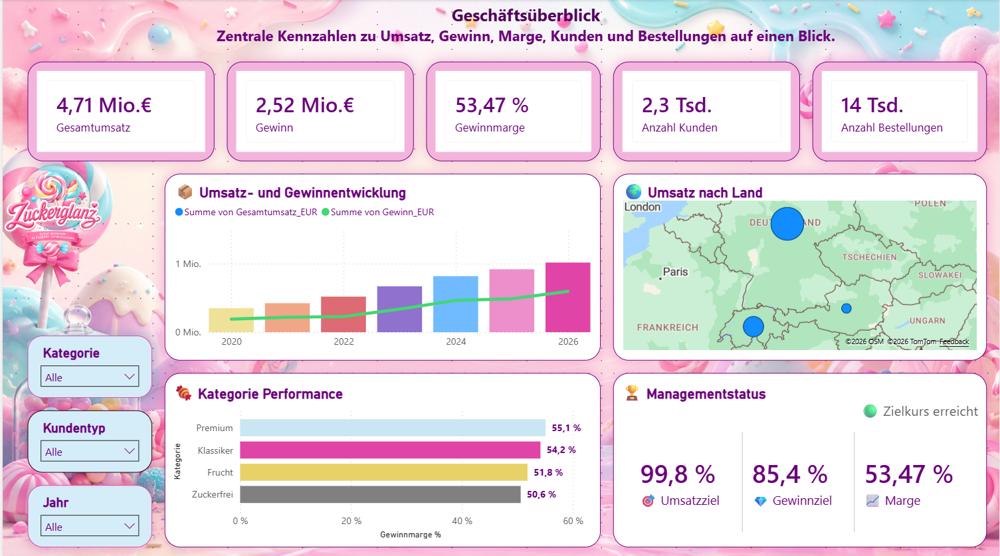

Business Intelligence · Praxisprojekt
🍬 Zuckerglanz GmbH
Interaktive Unternehmensanalyse mit Microsoft Power BI – von der Datenaufbereitung und Modellierung bis zur Simulation und strategischen Handlungsempfehlung.
Power BI
Power Query
DAX
Datenmodellierung
Was-wäre-wenn-Analyse
Business Intelligence

Interaktives Power-BI-Dashboard
Analysiere Umsatz, Gewinn, Kunden, Produkte, Qualität und Regionen. Nutze im Bericht Filter, Drilldowns, Tooltips und dynamische Simulationen.
Der Bericht wird in einem neuen Browser-Tab geöffnet. Eine Microsoft-Anmeldung oder Zugriffsberechtigung kann erforderlich sein.
Zentrale Kennzahlen
Projekt-Highlights
Unternehmensanalyse
Analyse von Umsatz, Kosten, Gewinn, Marge, Zielerreichung und zeitlicher Entwicklung.
Simulationen
Dynamische Absatz- und Rabattszenarien mit Was-wäre-wenn-Parametern und Managementempfehlungen.
Strategie
SWOT-Analyse, strategische Ziele und konkrete kurz- und mittelfristige Maßnahmen.